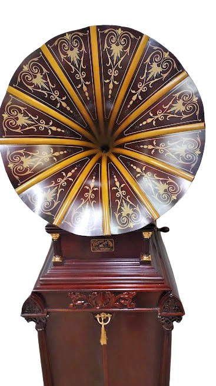
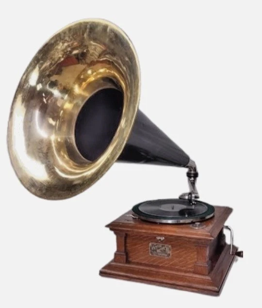
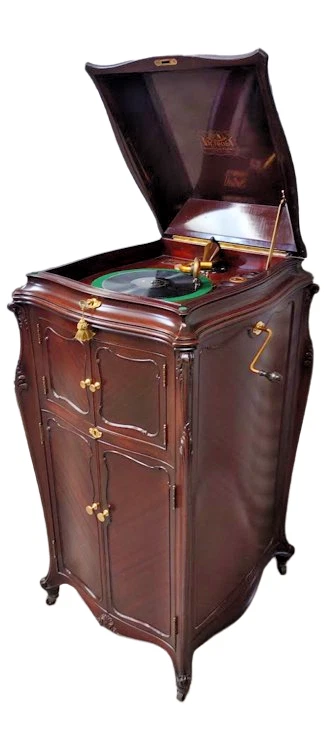
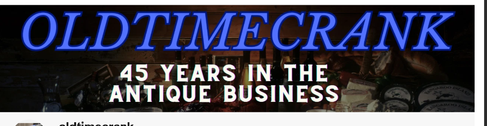

★ Premier Showcase

Victor VI with Matching Herzog No. 820 Cabinet
Flagship outside-horn gramophone with 24K gold-plated hardware, matching curved cabinet, and rare stenciled Eureka wood horn.
Museum-grade antique phonographs, Edison cylinder players, and rare custom record cabinets — restored with passion, precision, and historical authenticity.
Hand-selected, fully restored instruments and cabinets currently available for immediate acquisition.

Flagship outside-horn gramophone with 24K gold-plated hardware, matching curved cabinet, and rare stenciled Eureka wood horn.

Quarter sawn oak cabinet with original factory finish, powerful triple-spring motor, and stunning 20.5" brass bell horn.

Victor's supreme luxury model with matched ribbon mahogany veneers, gold-plated trim, and masterfully rebuilt mechanicals.
Every instrument that enters our workshop receives the care of over four decades of restoration mastery.
No electronics, cords, or digital sound. Experience the warm, authentic mechanical acoustic sound vibrations just as they were heard in 1904.
Rebuilt spring motors, cleaned and regulated governors, genuine mica diaphragm reproducers, and historically accurate museum-grade finishes.
Double-boxed, heavily padded custom crating and insured freight handling ensuring your antique arrives in flawless playing condition anywhere in the world.
Each unit is thoroughly inspected for period correctness, serial validation, original patents, and verified operational performance.

My name is Mike Patella and I have been buying, restoring, and selling antique phonographs for over 45 years.
At Old Time Crank, we restore and preserve authentic Edison phonographs, Victor outside-horn players, and fine carved record cabinets.
Every single piece is completely disassembled, meticulously serviced, acoustically tuned, and rigorously tested so history lives on through vivid sound.
Call, text, or email us directly with questions or to discuss custom shipping and crating for any instrument.
📞 954-649-1037
✉️ oldtimecrank@gmail.com
Located in Fort White, Florida • Worldwide Safe Freight Shipping Available